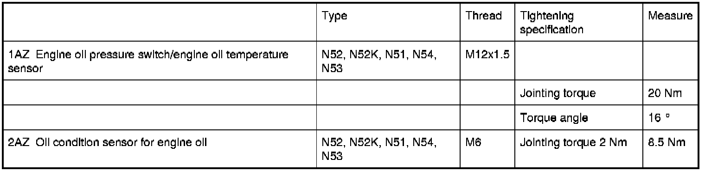

Operation CHARM
: Car repair manuals for everyone.
Home
>>
BMW
>>
2007
>>
X3 3.0si (E83) L6-3.0L (N52K)
>>
Repair and Diagnosis
>>
Engine, Cooling and Exhaust
>>
Engine
>>
Specifications
>>
12 61 Display for Oil Pressure, Oil Temperature, Oil Level Sensors / Switches
12 61 Display for Oil Pressure, Oil Temperature, Oil Level Sensors / Switches
12 61
Engine oil pressure
, engine oil temperature, oil condition display
